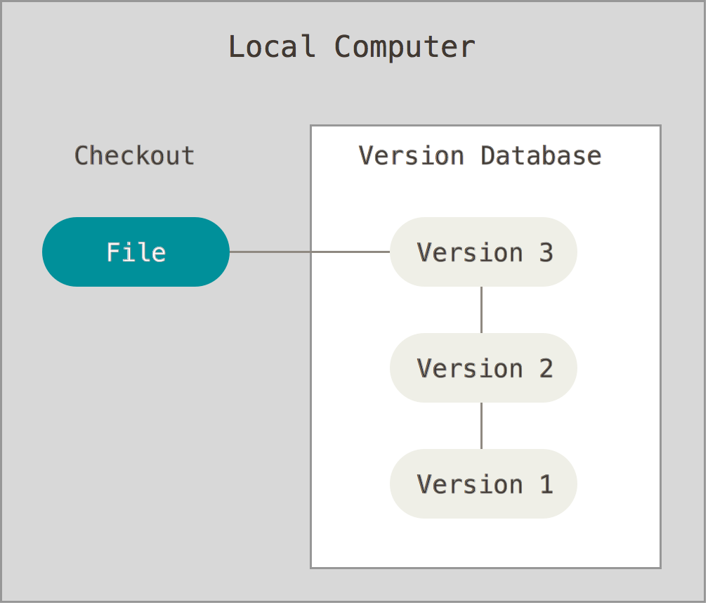
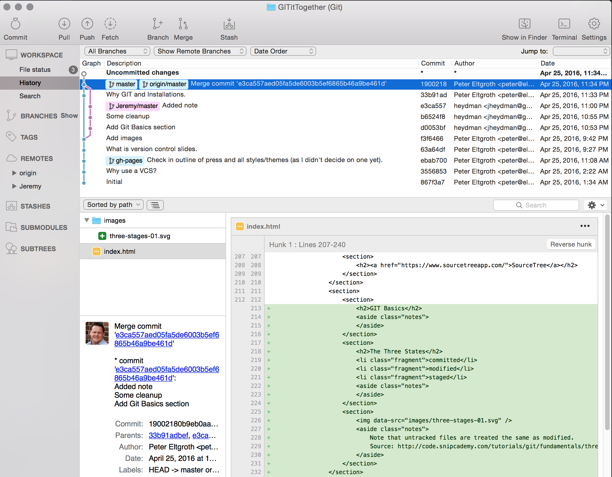

Git it Together
Peter Eltgroth
Jeremy Heydman
Why use a version control system?
Changing Requirements

This worked in the last release . . .

How can I solve this?

What is version control?
A system that:
Local Version Control Systems
Centralized Version Control Systems

Distributed Version Control Systems

Why Git?
Design goals:
How?
Git takes a stream snapshots by doing a SHA-1 check-sum of everything before it is committed.

Ability to commit work offline
And later syncronize with others
Fast, flexible branching and merging
Experiment with solutions, merge the best & delete the rest.
Full Local History
Fast comparisons over the complete life of the project
Installation
MacOS
Since Mavericks (10.9) just type 'git' in a terminal.
If you want/need a newer version downlaod it directly from git-scm, use Homebrew, or GitHub Desktop.
Windows
Download git for windows or GitHub Desktop.
Linux
Fedora:
$ sudo yum install git-all
Debian-based:
$ sudo apt-get install git-all
SourceTree
My favorite GUI
Git Basics
The Three States
Command Line Help
$ git {optional-command-name} --help
Try Git
Learn Git commands in your browser at try.github.io
Initialize a new Git repository
$ mkdir myproj
$ cd myproj
$ git init
Checking Status
$ git status
Add a file
$ git add {file}
What differences exist?
Diff of modified changes
$ git diff
Diff of staged changes
$ git diff --staged
Reset Changes
Unstages a file
$ git reset {file-path}
Commit Changes
$ git commit -m '{message}'
Branching
Create
$ git branch {branch-name}
Delete
$ git branch -d {branch-name}
Checkout
$ git checkout {branch-name}
Merge
$ git merge {branch-name}
Resolve conflicts
$ git mergetool
Rebase
Replay a changeset by rewinding to a common ancestor and reapplying each change in turn.
This keeps history more linear and easier to read.
$ git rebase {branch-name}
Merge vs. Rebase


Rebase Warning!
If anyone already has your C4 commit, this will cause problems.
Fast Forward

Commit Log
$ git log
Show diffs for the last n commits
$ git log -p -{n}
Show abbreviated stats
$ git log --stat
Show a graph
$ git log --graph
Hosted solutions
GitHub
BitBucket
GitLab
VSTS
Fork
Your copy of a repository in at the hosting provider.
Clone an existing repository
$ git clone {path to repo}
$ git clone https://github.com/PeterEltgroth/itconf2016
Remotes
List
$ git remote
List with URLs
$ git remote -v
Inspect
$ git remote show {optional-remote-name}
Remotes
Add
$ git remote add {remote-name} {url}
Rename
$ git remote rename {old-name} {new-name}
Remove
$ git remote rm {remote-name}
Fetch
$ git fetch {remote-name}
Pull
Fetches and Merges the remote branch into the current branch
$ git pull {remote-name} {remote-branch}
Push
Push remote branch into the current branch
$ git push {remote-name} {branch-name}
Pull Request
A request that a change you made be pulled back into a branch on another copy of the repository.
As a developer submitting a PR, it is generally your responsibility to catch up and resolve any merge conflicts with the branch your PR is targeting.